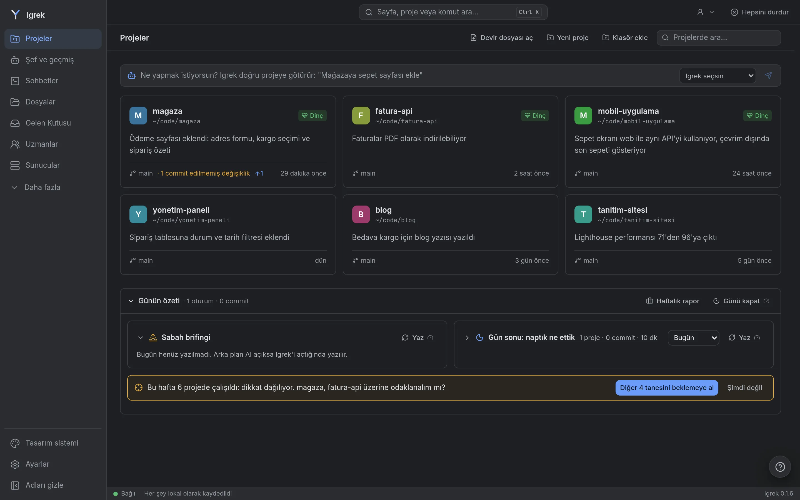

Igrek belgeleri
Igrek'i kurmak, ilk işini başlatmak ve verinle ne yaptığını bilmek için gereken her şey.

Kurulum
Masaüstü uygulaması
Bilgisayarına uygun paketi son sürümden indir: Windows için .msi, macOS için .dmg (Apple işlemci için aarch64, Intel için x64), Linux için AppImage ya da .deb. Her biri yaklaşık 17 MB (AppImage kendi WebKit'ini taşıdığı için daha büyük).
Paketler ücretli bir sertifikayla imzalanmadığı için sistem bir kez sorar:
- Windows: "Windows bilgisayarınızı korudu" çıkar. Ek bilgi'ye, sonra Yine de çalıştır'a tıkla.
- macOS: "Igrek açılamıyor" çıkar. Kapat, Sistem Ayarları > Gizlilik ve Güvenlik'i aç, aşağı kaydırıp Yine de Aç'a tıkla.
- Linux (AppImage): çalıştırılabilir yap (
chmod +x Igrek_*.AppImage), sonra aç. Bazı sistemlerde öncelibfuse2gerekir.
Claude Code ya da Codex içinde değildir: Igrek ilk açılışta onlara bakar, istersen tek tıkla kurar. Bir kez giriş yapman yeter.
Terminalden
Linux ve macOS:
curl -fsSL https://raw.githubusercontent.com/Mohamedattiadev/igrek/main/scripts/install.sh | shWindows (PowerShell). Önce Git for Windows'u kur; Claude Code onun bash'ini kullanır.
irm https://raw.githubusercontent.com/Mohamedattiadev/igrek/main/scripts/install.ps1 | iexDocker ile
git clone https://github.com/Mohamedattiadev/igrek.git && cd igrek
docker compose up -dSonra http://localhost:7777 adresini aç.
İlk açılış
Dilini seç, kod yazıp yazmadığını söyle, sonra proje klasörlerini ekle: tek bir proje ya da birkaç proje içeren bir klasör. Igrek yalnızca eklediğin klasörleri gösterir; Claude'un daha önce çalıştığı klasörler tek tıkla eklenir.
- Basit (kod yazmıyorsan): bir proje genel bakışını, sohbetlerini ve dosyalarını sade dille gösterir.
- Geliştirici: kod, pano, sağlık, kurulum ve araçlar da. Ayarlar > Mod'dan istediğin zaman değişir; hiçbir şey silinmez.
İşe başlamak
Başlangıç yeri ana sayfadaki Ne yapmak istiyorsun? kutusu. Igrek seçsin'de bırakırsan her projeyi bilen şef işi doğru projeye verir; projeyi kendin seçebilirsin; ya da Birden çok proje ile bir işi birkaç projeye gönderirsin, her biri kendi kopyasında, sonuçlar yan yana.
Bir projeye giden iş, türüne göre bir çalışma yoluyla gider: hata önce yeniden üretilir, yavaşlık önce ve sonra ölçülür, yeniden düzenlemede davranış aynı kalır, yeni özellik önce veriyle ve en küçük sürümle başlar. Kutu hangisi olduğunu söyler; çıkar dersen yazdığın gibi gider.
Proje içinde Yeni sohbet bir sohbet açar; okunda terminaller (Claude Code, Codex, kabuk) ve diğer hesapların var.
Sohbetler
Kutuda her mesajın ihtiyacı olanlar var: yazı, resim, kayıtlı prompt'lar ve uzmanlar. Onay modu, model ve ayrıntı Sohbet ayarları'nda. Kutunun üstünde: ajanın planı, sohbetin yapılacaklar listesi ve sohbetin değiştirdiği dosyalar (fark ve tek tıkla geri alma).
Başlık son turun 5 saatlik limitinden ne kadar yediğini, göndermeden önce de burada bir mesajın genelde ne harcadığını ve ne kaldığını gösterir. Model çağıran her şeyde küçük bir işaret var.
Neden?
Değişen her dosyanın bir Neden? düğmesi var: değişikliğe yol açan istek, ait olduğu plan adımı ve aynı turda sorulan uzman. Sohbetin kendisinden okunur; hiçbir şey tahmin edilmez.
Sağlık ve Düzelt
Sağlık sekmesi mimariyi, güvenliği, testleri, belgeleri, bağımlılıkları ve daha fazlasını puanlar, neyin iyileşeceğini listeler. Basit olanlarda (eksik lockfile, git'teki .env) Düzelt bilinen bir komutu, çalıştırmadan önce göstererek çalıştırır; diğerlerini bölümün uzmanı kendi kopyasında yapar, birleştirmeden önce sen bakarsın. Birleştirmeden önce Igrek değişeni kullanan dosyaları ve testleri gösterir.
Uzmanlar
Güvenlikten veritabanına, üründen finansa otuz kadar uzman; her biri alanının standartları ve sayılarıyla. Sohbette @ ile birini çağır, bir projeyi hepsine sor ya da hassas değişikliklerde uzman incelemesini aç. Her inceleme bir model çağrısıdır, bu yüzden varsayılan olarak kapalı. Uzmanlar paket olarak paylaşılabilir.
Hafıza
Kararlar, kurallar ve hatalar proje başına saklanır ve her sohbetin başında AI'ın önüne konur. Claude Code CLAUDE.md, Codex AGENTS.md okur; Hafıza sekmesi yalnızca birinde olan kuralları gösterir ve birleştirir, iki ajan da aynı kurallara uyar.
Tarayıcı eklentisi
Chrome, Brave ve Edge için. Formları özel bilgilerinle, AI onları görmeden doldurur; bir alanın metnini yazar ve sayfada seninle birlikte iş yapar: sayfa ya da seçtiğin bir öğe hakkında sor, en çok beş adım (tıkla, yaz, seç) önersin. Her adım sayfada çerçevelenir ve ancak Yap'a basınca yapılır; gönderen, ödeyen ya da silen adım iki kez sorar, şifre alanına hiç yazılmaz.
Bağlamak için panelinde Bağlan'a bas, ikisinde de aynı kod görünürken Igrek'te İzin ver'e bas.
Gizlilik
Her şey senin bilgisayarında çalışır. Telemetri yok, ücretli API yok; Igrek'in internette açtığı her adres Ayarlar'da listelenir. Kaydettiğin özel bilgiler ve projelerinin .env sırları, mesaj çıkmadan [[private:iban]] gibi yer tutuculara dönüşür, gerçek değerler senin tarafında geri konur. Maaş, IBAN, kart ve kimlik numaraları şekillerinden de tanınır.
AI'ın okuduğu bir dosya AI araçlarına yardım etmemesini söylüyorsa (bir ödev kuralı, bir politika), Igrek o satırı sana bir kez gösterir, devam edip etmeyeceğine sen karar verirsin. Modelden hiçbir şey gizlenmez.
Takım
İsteğe bağlı bir hub, senin kurduğun bir sunucuda, seçtiğin projeleri uçtan uca şifreli paylaşır. Herkes kendi AI hesabını kullanır; hesaplar asla paylaşılmaz. Hub kurulumu README'de.
Başka bilgisayara taşıma
Ayarlar, Başka bilgisayara taşı: şifreyle kilitli tek bir dosya Igrek'in tuttuğu her şeyi taşır. Diğer bilgisayarda Igrek'te aç ve yeniden başlat. AI girişleri dosyada yok; orada yeniden giriş yap.
Güncelleme ve kaldırma
Masaüstü uygulaması açılırken ve günde bir kez yeni sürüme bakar, sen onaylayınca kurar. Terminalden kurduysan kurulum komutunu yeniden çalıştır.
Kaldırmak için uygulamayı kaldır (ya da AppImage'ı sil), verisini ~/.igrek, çalışma ortamını ~/.local/share/igrek-runtime (Windows: %LOCALAPPDATA%\igrek-runtime) içinden sil. Güvenlik açıkları: SECURITY.md.